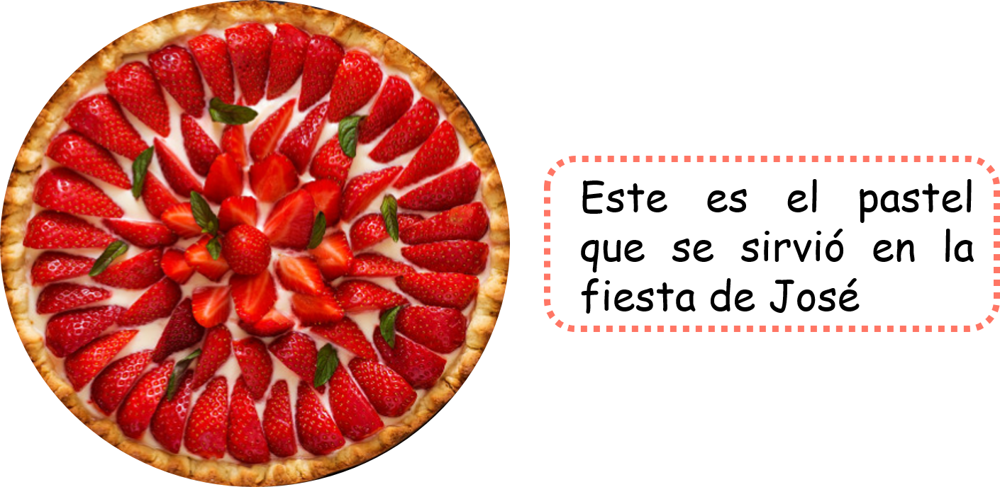
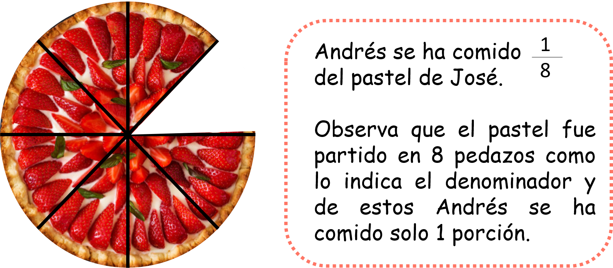
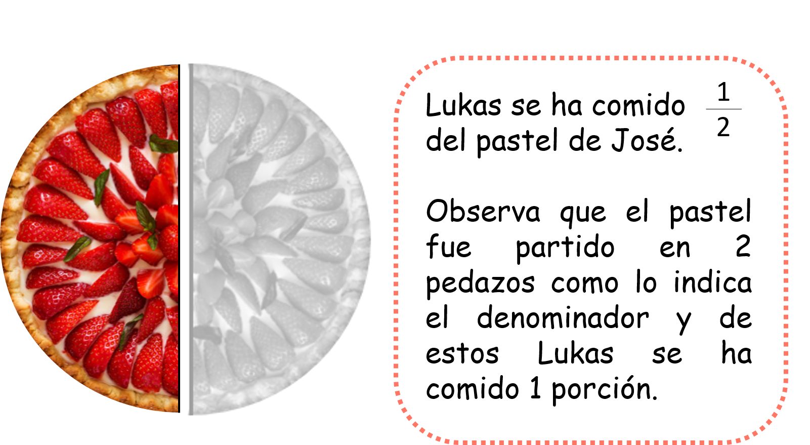
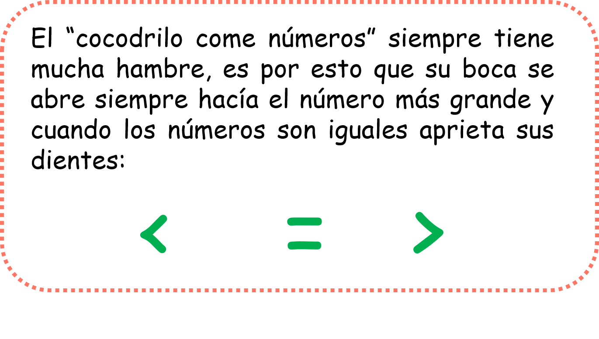
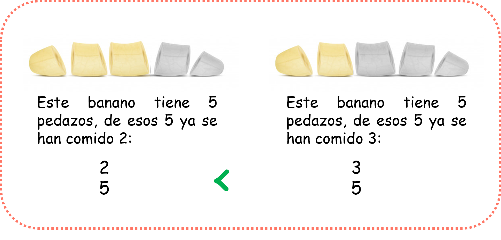
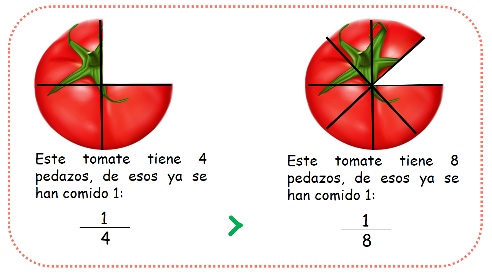
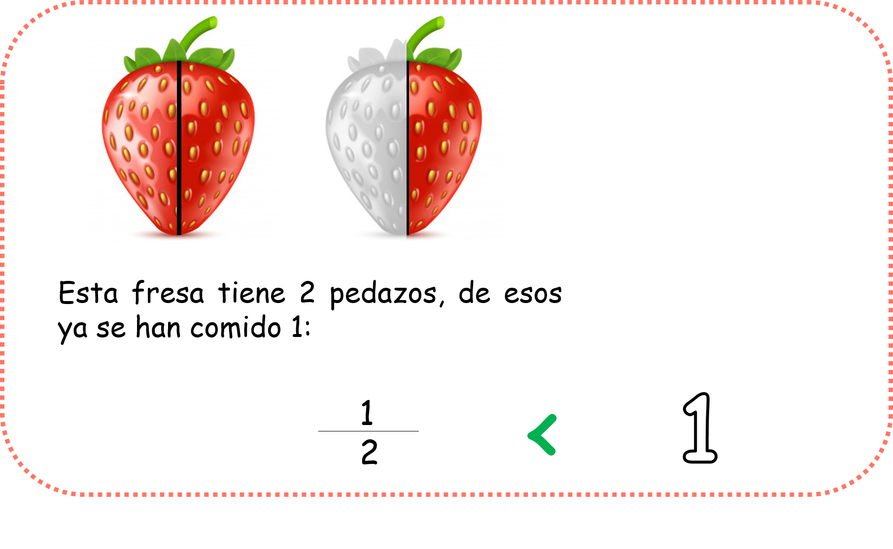
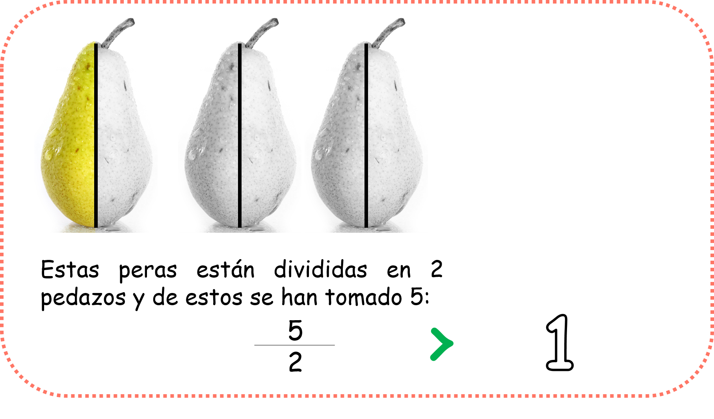

Comparación de fracciones
En este capítulo vas a usar los conceptos básicos de fracciones

¿Qué es la comparación de fracciones y para qué nos sirve?
Cuando queremos comparar algo necesitamos más de una cosa, ya que cuando comparas, quieres saber qué atributos o cualidades tiene una cosa que no tenga la otra. Cuando queremos comparar fracciones necesitamos entonces, de más de una fracción y lo hacemos porque necesitamos saber si una fracción es Igual, menor o mayor que otra.
Observa:
Para solucionar la pregunta que se ha planteado José sería mejor graficar los datos que nos ofrece su dilema:
Ahora observa la porción del pastel que se ha comido Andrés:
Ahora observemos la porción que se ha comido Lukas:
Es así como visualmente observamos que es Lukas quien ha comido más pastel, es por esto que un medio es mayor que un octavo.
- ¿Qué vamos a aprender?
- Comparación de fracciones con el mismo denominador
- Comparación de fracciones con el mismo numerador
- Comparación de fracciones con la unidad
Antes de empezar debes recordar:
Recuerda que los símbolos mayor que, menor que e igual a, se pueden usar siguiendo esta pequeña historia:
(1)Comparación de fracciones con el mismo denominador:
Cuando tenemos 2 o más fracciones con el mismo denominador Será mayor aquella que tenga el numerador más grande.
Observa:
Ambas fracciones tienen el mismo denominador pero es mayor la segunda porque tiene el numerador más grande es por esto que la boca del cocodrilo se abre hacia la fracción mayor.
(2)Comparación de fracciones con el mismo numerador:
Cuando tenemos dos o más fracciones con el mismo numerador será mayor la que tenga el denominador más pequeño.
Observa:
Observa que estas dos fracciones tienen el mismo numerador pero su denominador es diferente, y cuando esto ocurre la boca del cocodrilo se come a la fracción que tenga el denominador más pequeño porque si observas los dos tomates el primero tiene porciones más grandes que el segundo, quiere decir que la primera fracción es mayor.
(3)Comparación de fracciones con la unidad:
Cuando comparamos una fracción con la unidad tenemos situaciones diferentes.
Observa:
A. Cuando la fracción es unitaria
Cuando la fracción es unitaria (es decir que tiene el numerador igual al denominador) será igual a la unidad.
Observa:

Si observas bien la fracción nos está indicando que la totalidad de la naranja fue comida y si tu divides 4 entre 4 obtendrás 1, ya que el 4 en la tabla del 4 esta en 1. Quiere decir que las fracciones unitarias son iguales a la unidad.
B. Cuando la fracción es propia
Cuando una fracción es propia (es decir su numerador es menor que el denominador) la fracción será menor que la unidad.
Observa:
Observa que una unidad es mayor que un medio ya que una fresa completa es un bocado más grande que solo media fresa. Es por esto que la boca del cocodrilo está abierta en dirección al 1, es decir a la unidad.
C. Cuando la fracción es impropia
Cuando la fracción es impropia (es decir su numerador es mayor que el denominador), la fracción será mayor que la unidad.
Observa:
Como puedes observar la boca del cocodrilo está abierta hacia la fracción ya que el numerador es mayor, observa que hay más de una unidad de peras.
Material extra para trabajar el tema de Comparación de fracciones:
En los siguientes enlaces podrás descargar diferentes fichas sobre comparación de fracciones creadas por Actiludis.com:
En este enlace encontrarás una ficha sobre comparación de fracciones con diferentes ejercicios creada por Fichasparaimprimir.com